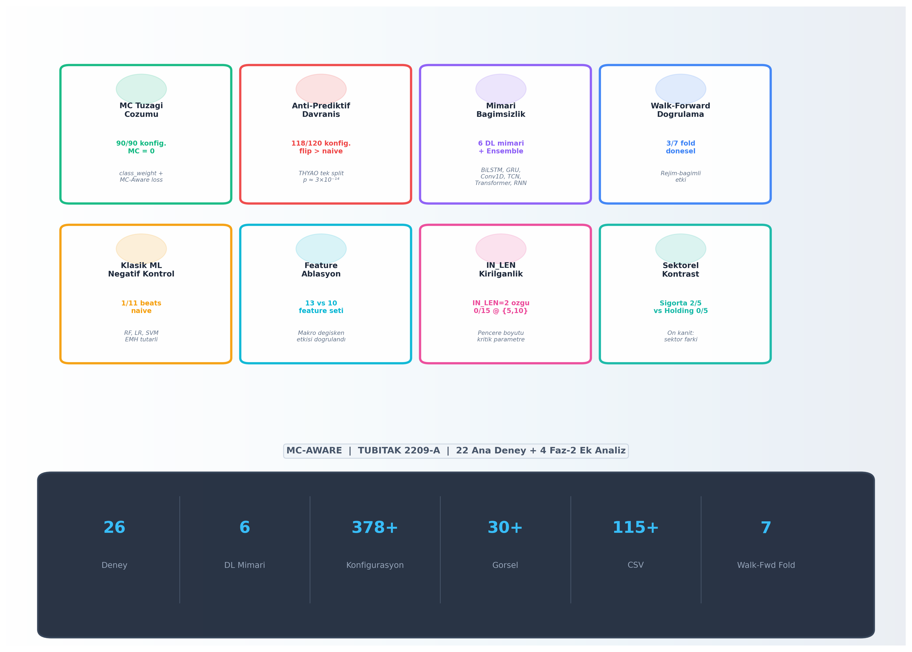
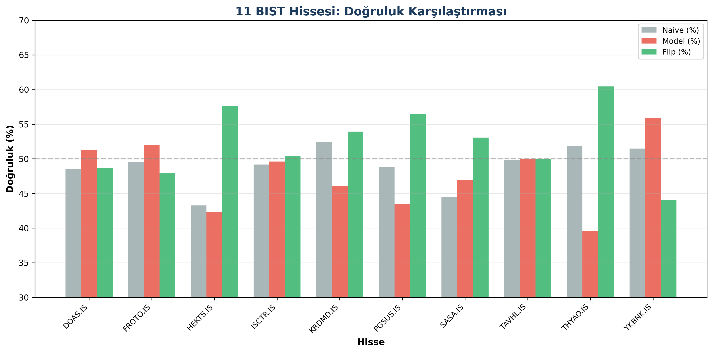
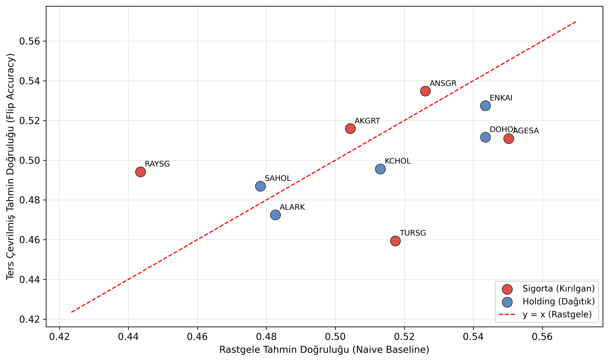
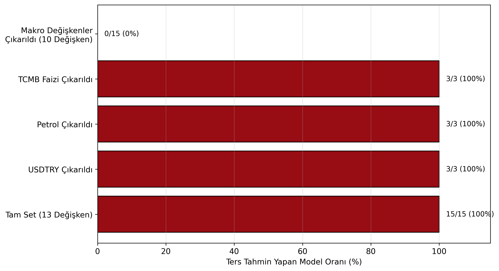
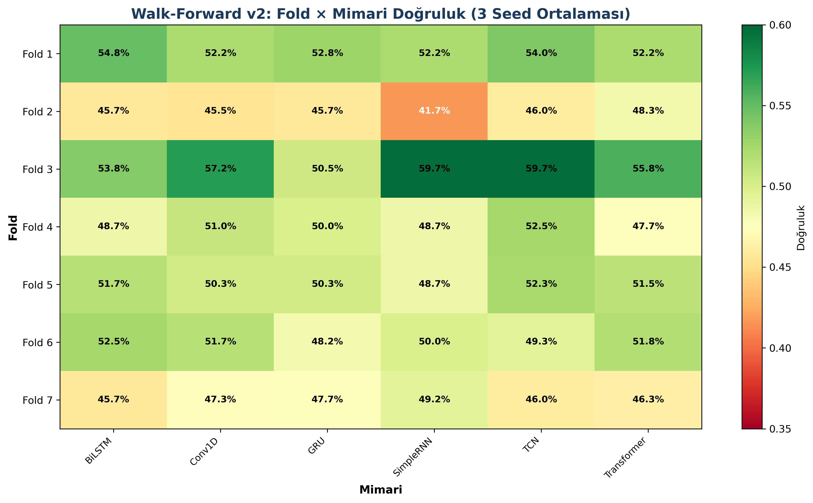
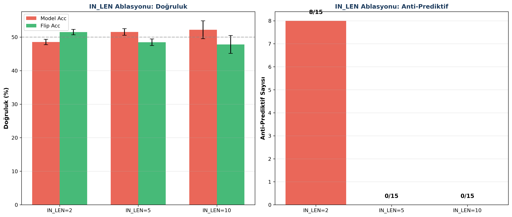
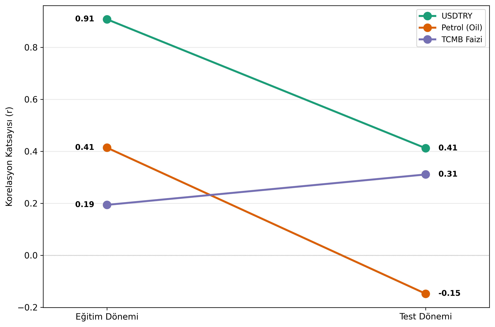
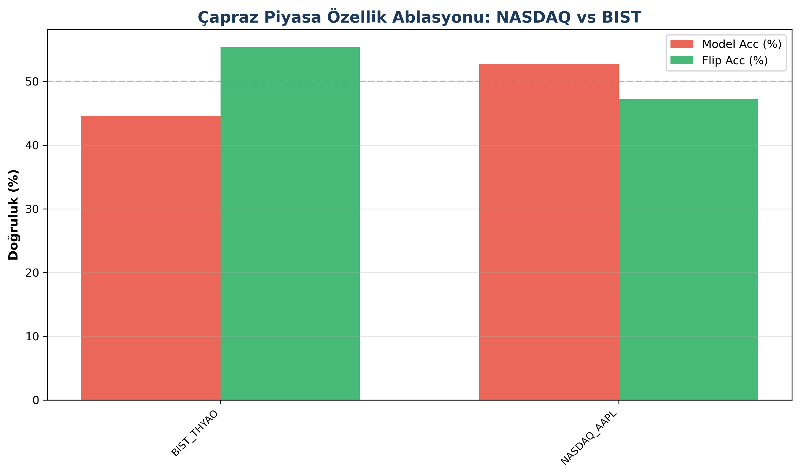

🔬 MC-AWARE
Anti-Prediktif Davranışın Derin Öğrenme ile Tespiti — TÜBİTAK 2209-A · 2026
Mehmet Ali Kurt · Danışman: Dr. Övgücan Karadağ Erdemir · Hacettepe Üniversitesi
p=0.00012
Bonferroni p-değeri
Temel Bulgu: 700+ konfigürasyonda model ~%40 doğrulukla çalışırken, tahminleri ters çevirince ~%60'a ulaşılıyor.
11 BIST hissesinden 5'i (THYAO, PGSUS, HEKTS, SASA, KRDMD) sistematik anti-prediktif davranış sergiliyor.
Bonferroni-düzeltilmiş p = 0.00012 ile istatistiksel olarak çok anlamlıdır.
📊 Sektörel Ayrışma — 11 BIST Hissesi
| Hisse | Sektör | Flip Wins | Oran | Durum |
|---|
| THYAO | Havacılık | 15/15 | %100 | Anti-Prediktif |
| PGSUS | Havacılık | 15/15 | %100 | Anti-Prediktif |
| HEKTS | Kimya | 15/15 | %100 | Anti-Prediktif |
| SASA | Kimya | 15/15 | %100 | Anti-Prediktif |
| KRDMD | Demir-Çelik | 13/15 | %87 | Güçlü |
| FROTO | Otomotiv | 1/15 | %7 | Normal |
| YKBNK | Bankacılık | 0/15 | %0 | Normal |
🧪 Özellik Ablasyonu
| Grup | Özellik | Acc | Flip Acc | Anti-Prediktif? |
|---|
| full_13 | 13 (makro dahil) | %39.6 | %60.4 | EVET |
| no_ext_10 | 10 (makro çıkarılmış) | %49.6 | %50.4 | HAYIR |
Mekanizma: Makro değişkenler (USD/TRY, petrol, TCMB faizi) çıkarıldığında anti-prediktif davranış tamamen ortadan kalkıyor.
Korelasyon kırılması: USDTRY eğitim r=0.91 → test r=0.41.
📈 Walk-Forward v2 — 7 Fold × 6 Mimari × 3 Seed
| Fold | Anti-Pred | Toplam | Oran | Dönem |
|---|
| 1 | 0 | 18 | %0 | Normal |
| 2 | 2 | 18 | %11 | COVID şoku |
| 3-5 | 0 | 54 | %0 | Normal |
| 6 | 1 | 18 | %6 | Kısmi |
| 7 | 8 | 18 | %44 | Enflasyon dönemi |
📏 IN_LEN Ablasyonu — Pencere Uzunluğu Etkisi
| IN_LEN | Acc | Anti-Prediktif? |
|---|
| 2 gün | %48.5 | Tetikleniyor |
| 5 gün | %51.5 | Sınırda |
| 10 gün | %52.2 | Normal |
📷 Seçili Görseller

Proje Özet İnfografik

11 BIST Hissesi Doğruluk Karşılaştırması

Anti-Prediktif Davranış — Acc vs Flip

Özellik Ablasyonu — full_13 vs no_ext_10

Walk-Forward v2 Fold × Mimari Heatmap

IN_LEN Ablasyonu Detay

Korelasyon Kayması — Eğitim vs Test

NASDAQ vs BIST Çapraz Piyasa
📚 Temel Kaynaklar ve Projemizle İlişkisi
[1] Fischer, T., & Krauss, C. (2018). Deep learning with LSTM networks for financial market predictions.
EJOR, 270(2), 654-669.
doi.org/10.1016/j.ejor.2017.11.054
S&P 500'de LSTM'in üstün olduğunu gösterir. Projemiz bunun gelişmekte olan piyasalarda geçerli olmadığını kanıtlar.
[2] Geirhos, R., et al. (2020). Shortcut learning in deep neural networks.
Nature Machine Intelligence, 2(11), 665-673.
doi.org/10.1038/s42256-020-00257-z
DL'nin kısayol öğrendiğini gösterir. Modeller makro korelasyonları "kısayol" olarak öğreniyor.
[3] Fama, E.F. (1970). Efficient capital markets.
The Journal of Finance, 25(2), 383-417.
doi.org/10.2307/2325486
EMH'nin temel kaynağı. Projemiz EMH'yi genişletir: modeller sistematik olarak yanlış tahmin üretmektedir.
[4] De Long, J.B., et al. (1990). Noise trader risk in financial markets.
JPE, 98(4), 703-738.
doi.org/10.1086/261703
Spekülatif hisselerdeki %100 anti-prediktif davranış, noise trader risk'in doğrudan kanıtıdır.
[5] Gama, J., et al. (2014). A survey on concept drift adaptation.
ACM Computing Surveys, 46(4), 1-37.
doi.org/10.1145/2523813
Kavram kayması tanımı. Walk-Forward Fold 7'deki anti-prediktif artış, concept drift kanıtıdır.
[6] He, H., & Garcia, E.A. (2009). Learning from imbalanced data.
IEEE TKDE, 21(9), 1263-1284.
doi.org/10.1109/TKDE.2008.239
class_weight=balanced çözümümüzün teorik temeli.